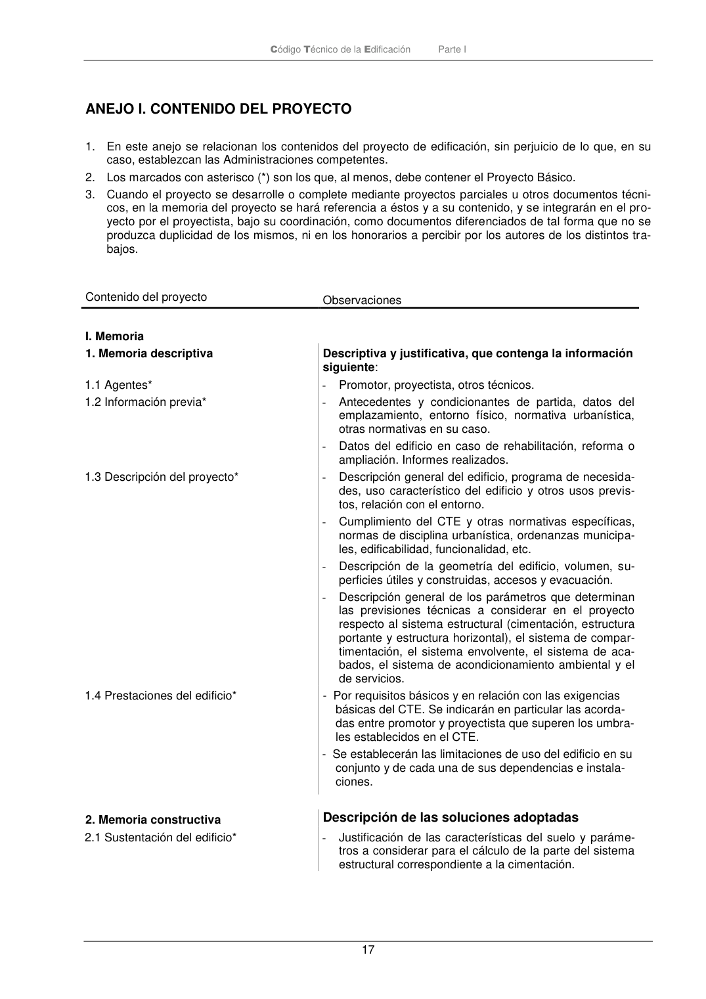

PARTE-I · ANEJO I. CONTENIDO DEL PROYECTO · versión 2022-06-14
SHA256: eaed39b98fbe715e9db817ab9bde93a5031c3d2c07440dd6a8653572b053a07f · página física 17 de 27 · métodos de encabezado
solo si están cotejados.
Formatos: Markdown · JSON de bloques · PDF p. 17 · imagen PNG
Código Técnico de la Edificación Parte I 17 ANEJO I. CONTENIDO DEL PROYECTO 1. En este anejo se relacionan los contenidos del proyecto de edificación, sin perjuicio de lo que, en su caso, establezcan las Administraciones competentes. 2. Los marcados con asterisco (*) son los que, al menos, debe contener el Proyecto Básico. 3. Cuando el proyecto se desarrolle o complete mediante proyectos parciales u otros documentos técni- cos, en la memoria del proyecto se hará referencia a éstos y a su contenido, y se integrarán en el pro- yecto por el proyectista, bajo su coordinación, como documentos diferenciados de tal forma que no se produzca duplicidad de los mismos, ni en los honorarios a percibir por los autores de los distintos tra- bajos. Contenido del proyecto Observaciones I. Memoria 1. Memoria descriptiva Descriptiva y justificativa, que contenga la información siguiente: 1.1 Agentes* - Promotor, proyectista, otros técnicos. 1.2 Información previa* - Antecedentes y condicionantes de partida, datos del emplazamiento, entorno físico, normativa urbanística, otras normativas en su caso. - Datos del edificio en caso de rehabilitación, reforma o ampliación. Informes realizados. 1.3 Descripción del proyecto* - Descripción general del edificio, programa de necesida- des, uso característico del edificio y otros usos previs- tos, relación con el entorno. - Cumplimiento del CTE y otras normativas específicas, normas de disciplina urbanística, ordenanzas municipa- les, edificabilidad, funcionalidad, etc. - Descripción de la geometría del edificio, volumen, su- perficies útiles y construidas, accesos y evacuación. - Descripción general de los parámetros que determinan las previsiones técnicas a considerar en el proyecto respecto al sistema estructural (cimentación, estructura portante y estructura horizontal), el sistema de compar- timentación, el sistema envolvente, el sistema de aca- bados, el sistema de acondicionamiento ambiental y el de servicios. 1.4 Prestaciones del edificio* - Por requisitos básicos y en relación con las exigencias básicas del CTE. Se indicarán en particular las acorda- das entre promotor y proyectista que superen los umbra- les establecidos en el CTE. - Se establecerán las limitaciones de uso del edificio en su conjunto y de cada una de sus dependencias e instala- ciones. 2. Memoria constructiva Descripción de las soluciones adoptadas 2.1 Sustentación del edificio* - Justificación de las características del suelo y paráme- tros a considerar para el cálculo de la parte del sistema estructural correspondiente a la cimentación.
